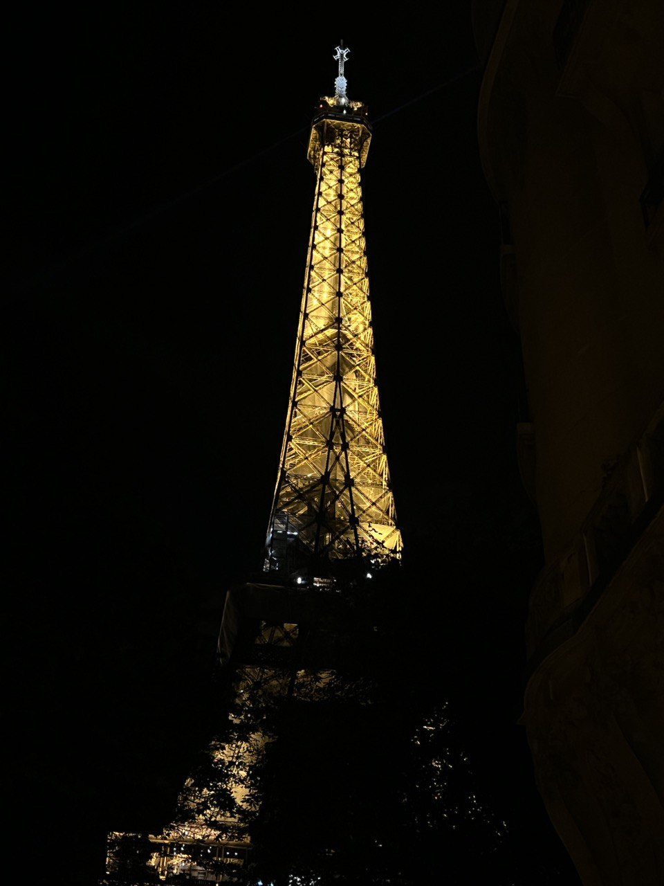

Travel has regained its popularity after the critical situation with Covid-19. Travelers from all over the world began to explore new continents and countries again. France and especially Paris burst into the top tourist sites. Travelers with experience and newcomers to the world of country exploration are always helped by tips and tricks. Based on my experience, I, Sofia Prokhorova, will help you make your trip to Paris easy, magical and unforgettable.
What it about?

ABOUT ME